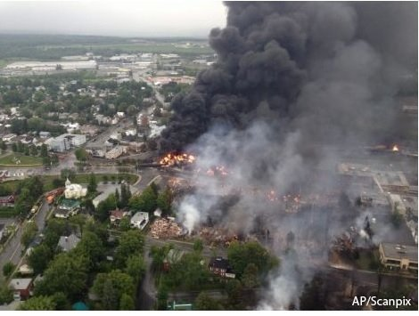
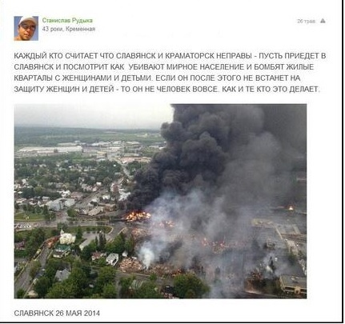
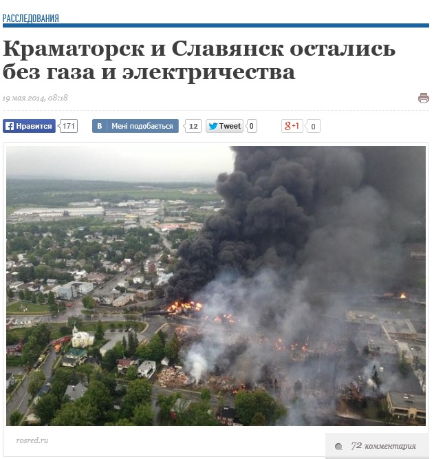
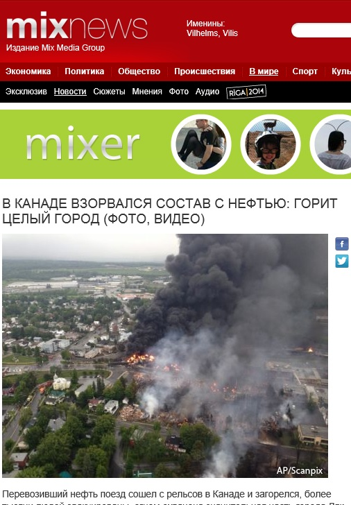

Фото Квебека после аварии состава с горючим представили как Славянск
В социальных сетях распространяется фотография, на которой якобы изображен город Славянск Донецкой области 26 мая 2014 года с горящими жилыми кварталами после бомбежки украинской армией.
Эта же фотография была использована для иллюстрации событий в Славянске еще 19 мая на сайте «Обозреватель».
Однако это фото сделано не в Славянске, а в канадском городе Ляк-Межантик в 2013 году после аварии состава с горючим.
Posted On: 2014-05-27T21:00:00




Content Date: 2014-05-27
Download Date: 2021-07-16
Document ID: L0C04FCEI